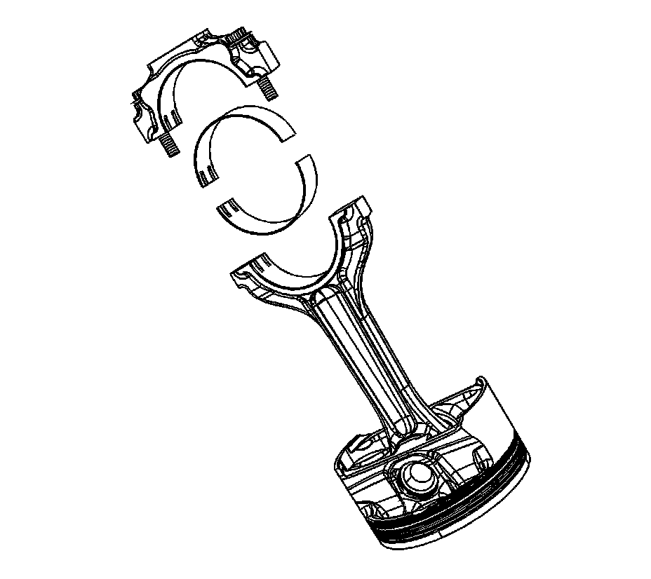
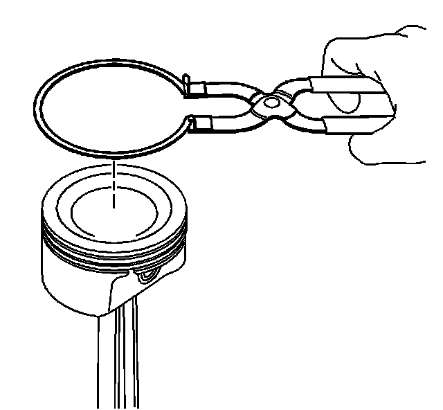
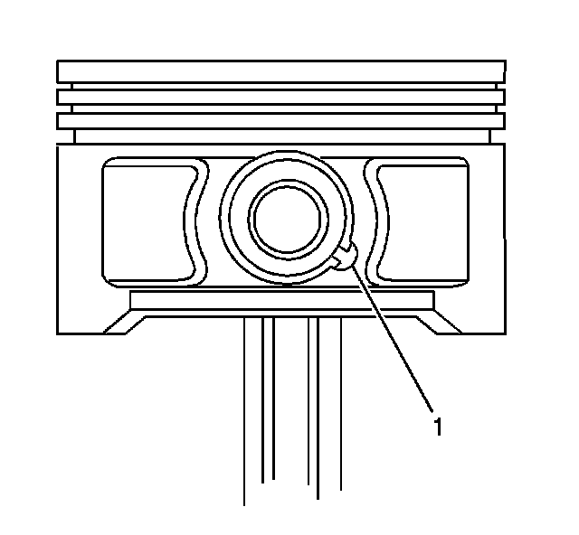
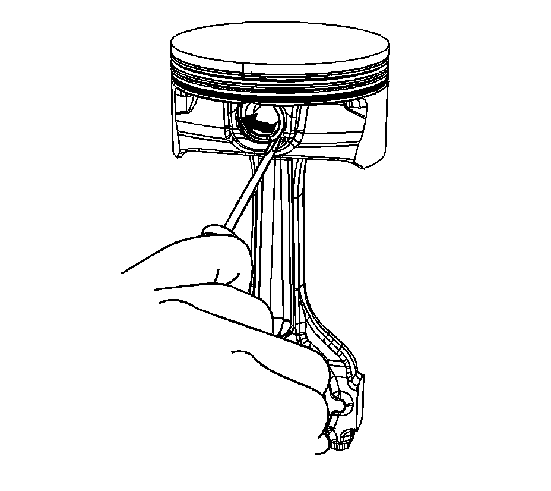
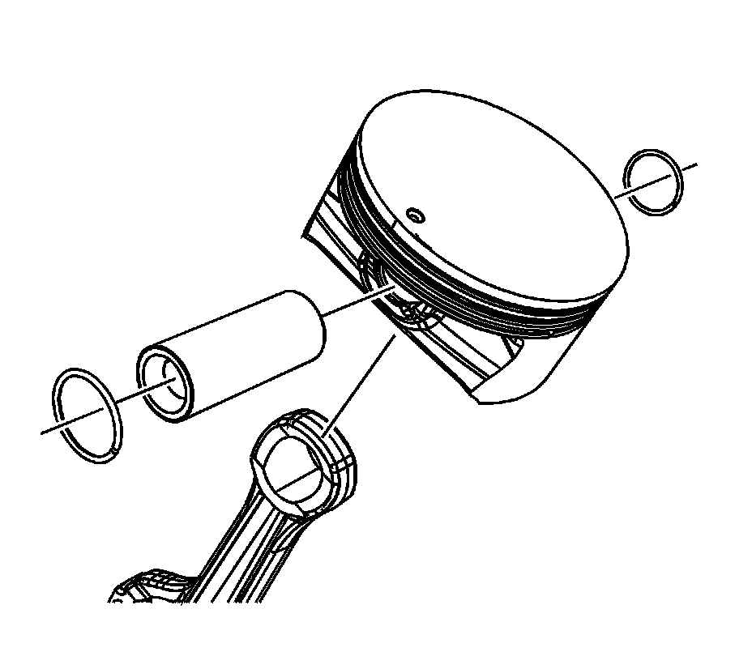

37. Piston and Connecting Rod Disassemble
Piston and Connecting Rod Disassemble

1. Remove the connecting rod bearings from the rod and cap.

2. Using piston ring pliers, remove the piston rings from the piston.

3. Rotate the piston pin retainers until the ring end gaps are positioned in the cutout area (1) of the pin bore.

4. Remove the retainers starting in the cutout area of the pin bore.

5. Remove the pin from the piston and connecting rod.
6. The piston and pin are a matched set and are not to be serviced separately.
Mark, sort, or organize the piston and the matching piston pin.